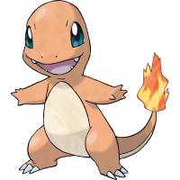

| HOME PAGE | POKEDEX |
Charmander
|  | Charmander è un Pokémon di tipo Fuoco. Insieme a Bulbasaur e Squirtle, è uno dei tre Pokémon iniziali disponibili all'inizio di Verde, Rosso, Blu, Rosso Fuoco e Verde Foglia. Inoltre, viene donato dal Professor Platan insieme a Bulbasaur e Squirtle appena si entra nel suo laboratorio a Luminopoli. Charmander si evolve in Charmeleon a partire dal livello 16 e poi in Charizard dal livello 36. |